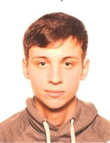

Sander van Riet
Over mij
Ik volg programmeren aan Thomas More
Ik ben hiervoor overgestapt uit een ander richting omdat de jobs in deze sector me meer aanspraken.
In mijn vrije tijd ga ik liefst op zonnige dagen rijden met de motor.
Daarnaast lees ik ook nog graag boeken.
Vorige opleidingen
Voor dat ik startte met de opleiding programmeren heb ik 2 andere richtingen gedaan. Ik heb 1 jaar gestudeerd
in geschiedenis aan de Universiteit Antwerpen en 4 jaar de opleiding integrale veiligheid gevolgd op Artesis plantijn.
Doelen
Mijn huidige doel is om het graduaat programmeren af te maken en hierin een job vinden.